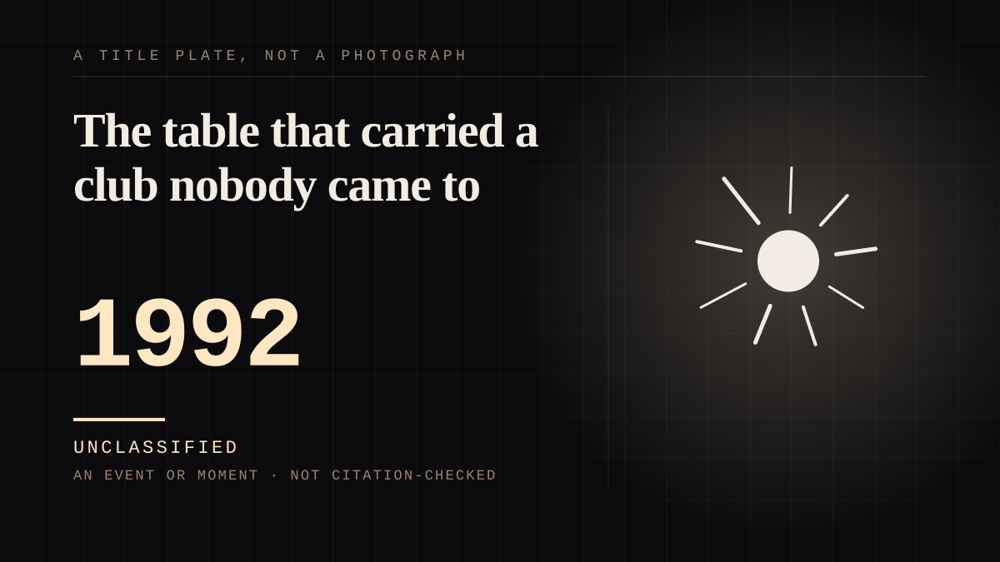

An event or moment · 1992 ·
The table that carried a club nobody came to
Twenty-two clubs left the Football League in one move to found a closed competition, and in its first season the twelfth-placed club was the one with the smallest crowds in the division.

This is the league-world shelf in its purest documented form: the object is the arrangement, not anyone in it. Wimbledon played a Premier League fixture on 26 January 1993 before a crowd of just over 3,000 - still the lowest attendance recorded in the competition - and finished twelfth, clear of the relegation battle. The arrangement, which existed as a table, a fixture list and a calendar that every member could read in advance, held a club that could not fill its own ground, and nobody inside it was ever going to be the thing the attachment was to.
Same story, 2 other entries
The god whose cult was dismantled from above1350 → The bird that says the words without a person behind them1920
Where it sits
1950 1950-1999 · 1992 1999
Provenance · 2 source record(s)
- retrievableThe 22 First Division clubs signed the Founder Members Agreement on 17 July 1991 and resigned from the Football League on 20 February 1992; the Premier League was established as a limited company on 27 May 1992; the inaugural campaign began 15 August 1992 with 22 clubs; reducing the field to 20 was intended from the outset and completed at the end of the 1994/95 season, when four clubs were relegated and two promoted.Premier League (n.d.). Premier League history, origins and creation. ↗
- retrievableWimbledon 1-3 Everton, 26 January 1993, attendance just over 3,000, the lowest recorded at a Premier League match; Wimbledon finished 12th, clear of the relegation battle. The breakaway was backed by a five-year deal with Sky and the BBC valued at GBP 304 million.Wikipedia (2024). 1992-93 FA Premier League. ↗
Connected · 2 out, 0 in
It sits in
The full timeline → · The database → · See it in the atlas →